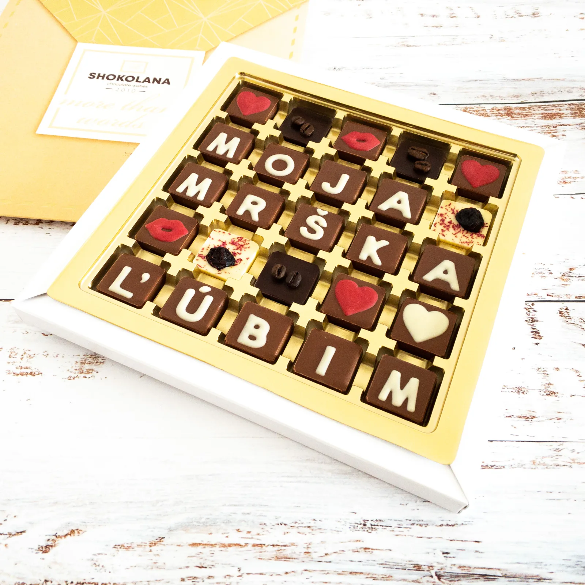
Priljubljen segment
Romantična sporočila
»Ljubim te« in druga osebna sporočila ostajajo prepoznavna in zelo iskana oblika darila.
Priložnost za pridobitev pripravljenega proizvodnega koncepta: opreme, kalupov, preverjenega strokovnega znanja in edinstvenega personaliziranega darilnega izdelka z močnim tržnim potencialom.
Ponudba vključuje:
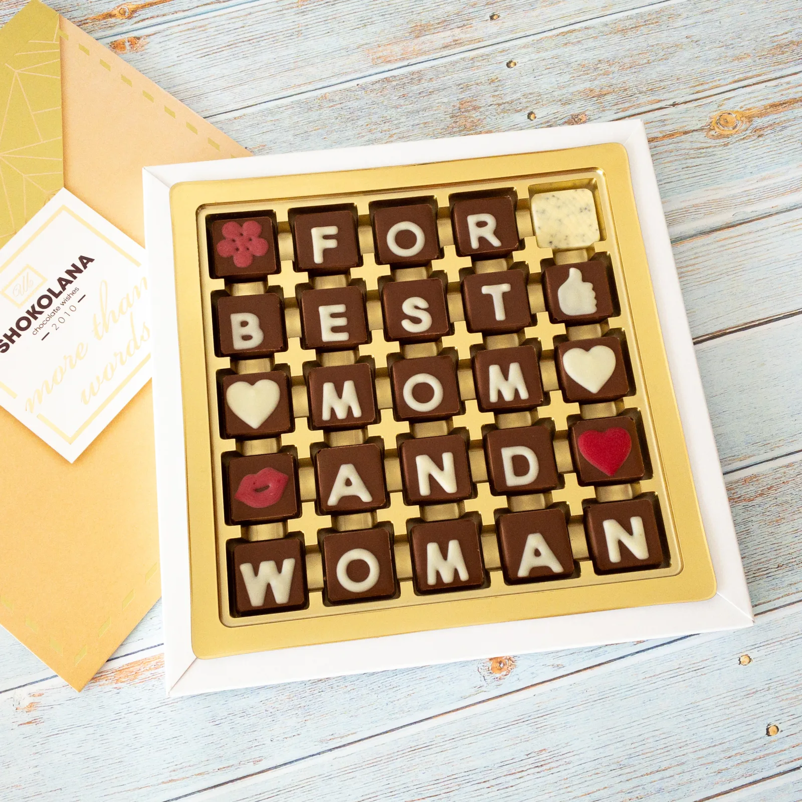
Personalizirana čokoladna sporočila sodijo v eno najmočnejših kategorij povpraševanja: čustvena darila. Vsaka črka nosi pomen.

»Ljubim te« in druga osebna sporočila ostajajo prepoznavna in zelo iskana oblika darila.
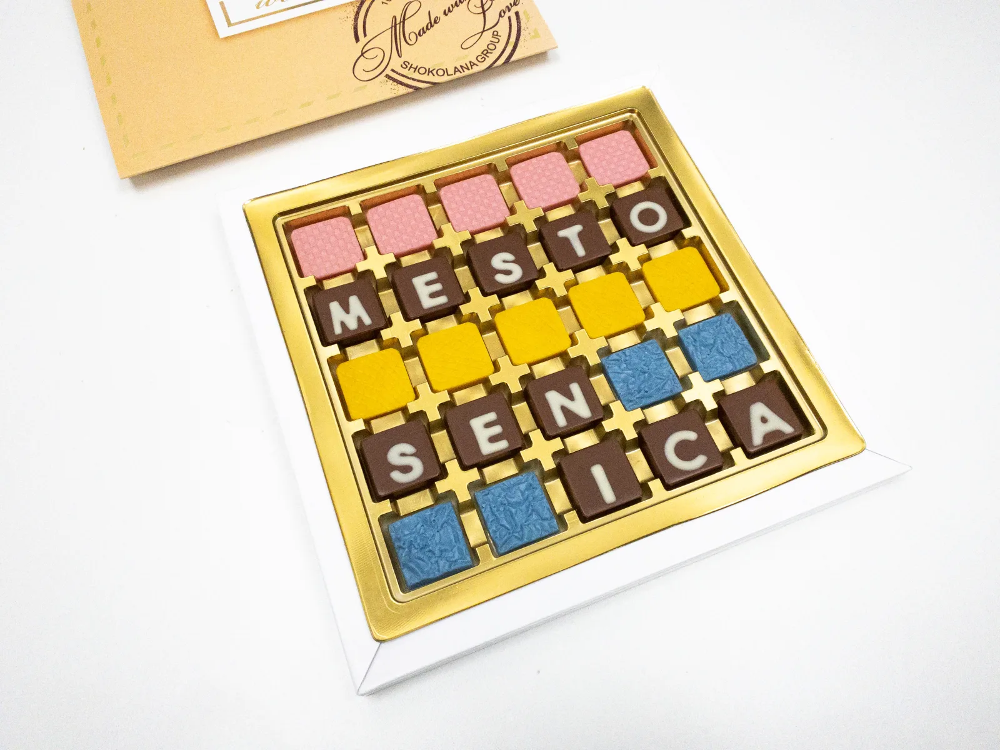
Potencial za večja naročila in premijske cene za poslovne stranke.
Romantično sporočilo, ki čokolado spremeni v osebno darilo.
Sezonski vrh povpraševanjaPersonalizirano voščilo, ki lahko postane osrednji del praznovanja.
Celoletno povpraševanjeElegantna darila in izrazi pozornosti, ki ostanejo v spominu.
Premijski segment B2BBožič, materinski dan, diplome in drugi pomembni dogodki.
Več sezonskih vrhovČokoladna sporočila z blagovno znamko za stranke, zaposlene in dogodke.
Potencial premijske ceneV svetu običajnih daril personalizirana čokoladna sporočila ustvarjajo osebno povezanost. Prejemnik ne vidi le čokolade — prejme sporočilo, ustvarjeno posebej zanj.
Personalizacija spremeni običajen slaščičarski izdelek v nepozabno darilo, ki ga ljudje fotografirajo, podarjajo, komentirajo in delijo na družbenih omrežjih.
»Vsaka čokoladna črka izraža ljubezen, čestitko ali hvaležnost. To ni le slaščičarski izdelek — to je sporočilo v svoji najslajši obliki.«Moč personaliziranega darila
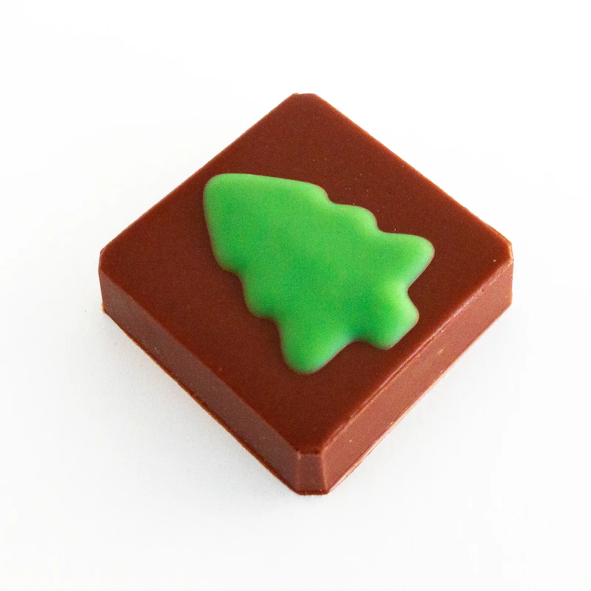
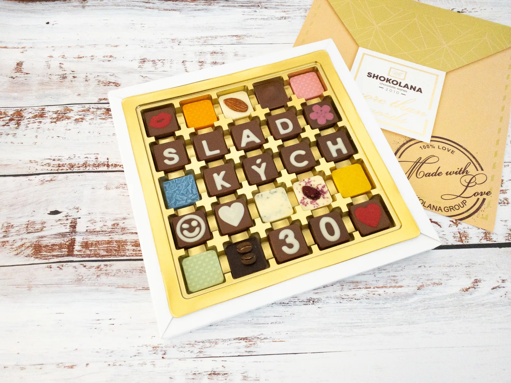
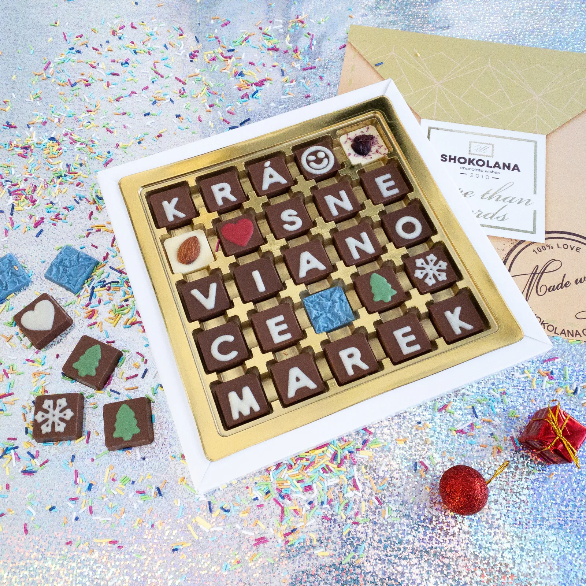
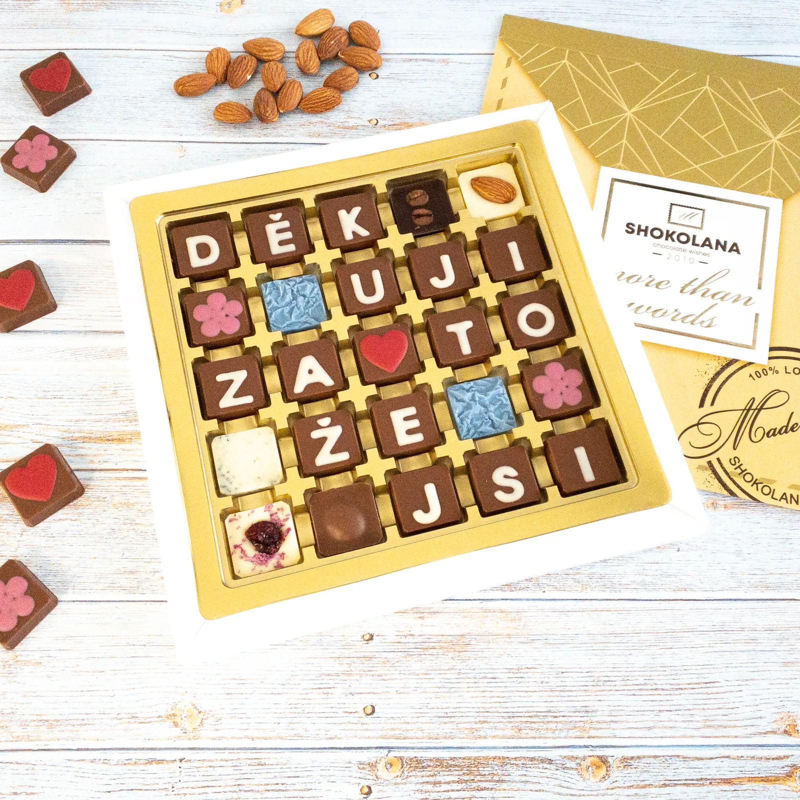
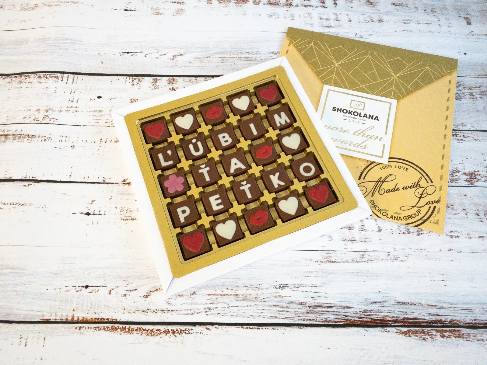
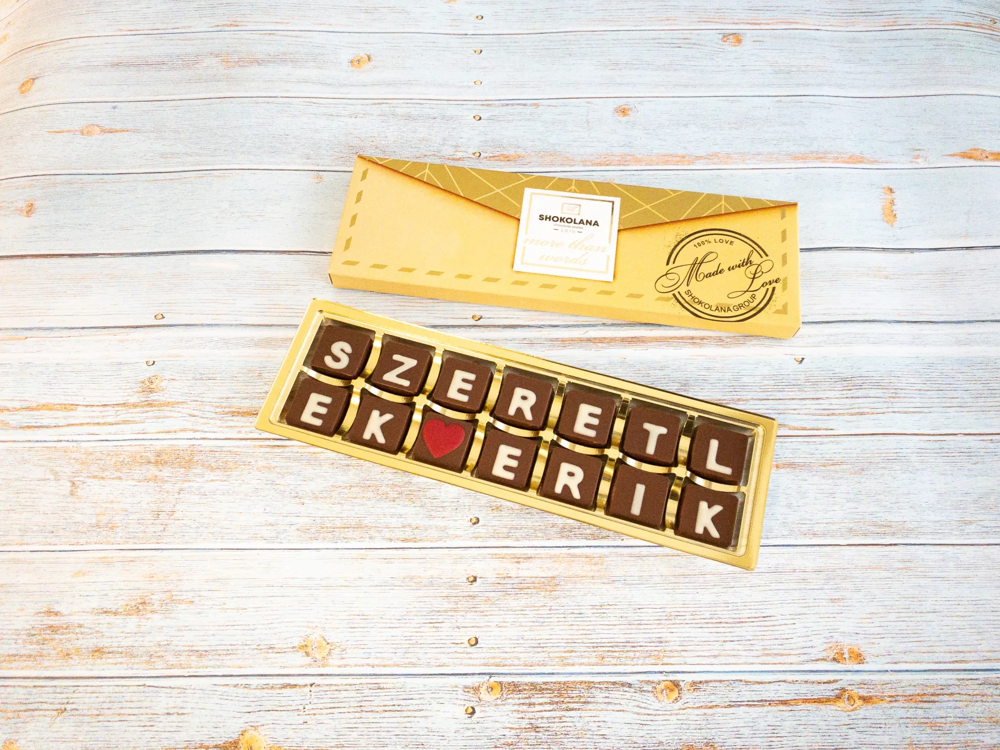
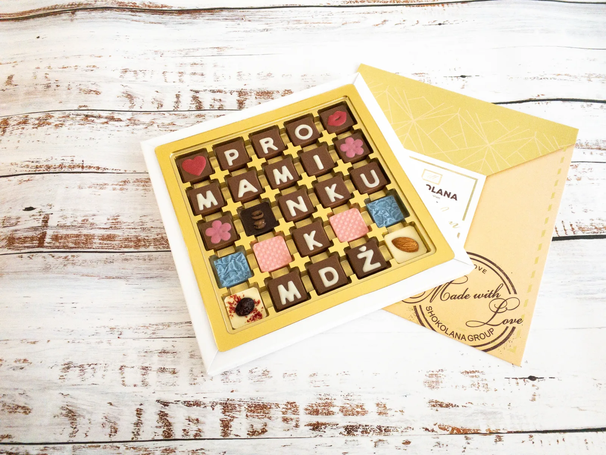
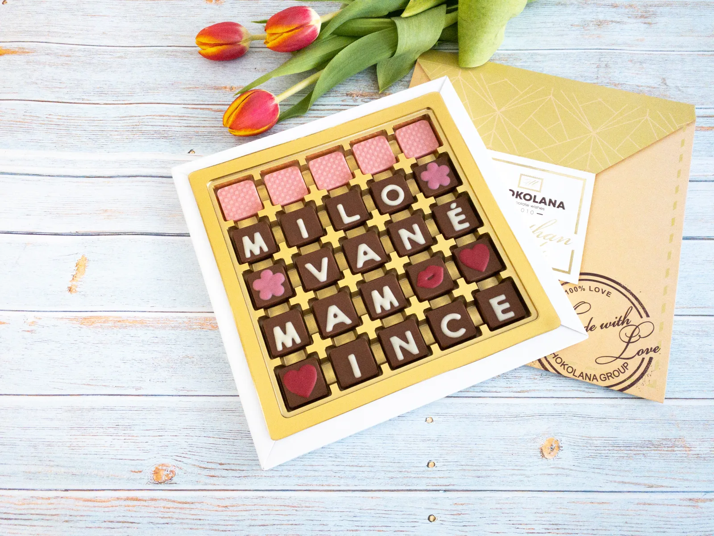
To je priložnost za vstop na trg personaliziranih daril s pripravljenim proizvodnim konceptom. Za razliko od običajne prodaje opreme ponudba vključuje prenos poslovnega sistema in praktičnih izkušenj.
Kupec ne prejme le opredmetenih sredstev, temveč tudi tehnološko znanje, proizvodne procese, poslovno logiko in gradiva, razvita v letih praktičnega dela.
Poglejte, kaj je vključenoOprema, orodja in delovni proces za izdelavo čokoladnih sporočil.
Personaliziran čokoladni izdelek z jasno čustveno vrednostjo, ki se razlikuje od običajnih daril.
Proizvodna tehnologija, nadzor kakovosti, pakiranje in organizacija procesov.
Prodajne možnosti prek B2C, mreže distributerjev, poslovnih naročil in e-trgovine.
Komplet za zagon ali širitev poslovanja v segmentu personaliziranih daril.
Ponudba je primerna za posameznike in podjetja, ki iščejo edinstven čustven izdelek z močnim darilnim potencialom, možnostjo lokalnega zagona in nadaljnje širitve.
Pripravljen koncept za tiste, ki želijo zgraditi posel okoli izdelka, ki združuje čokolado, personalizacijo in čustveno darilo.
Primerno za pare in družinske ekipe, ki iščejo razumljiv izdelek, prijeten za izdelavo in preprost za predstavitev strankam.
Priložnost za razširitev ponudbe z nepozabnim izdelkom za rojstne dneve, praznike, poroke in druge pomembne priložnosti.
Vizualen in personaliziran izdelek, primeren za spletne trgovine, družbena omrežja in neposredno prodajo končnim kupcem.
Čokoladna sporočila je mogoče ponuditi kot poslovna darila, promocijske izdelke in spominke za dogodke.
Preprost in jasen model proizvodnje in prodaje.
Izdelava čokoladnih črk z uporabo opreme, kalupov in tehnologije.
Sestavljanje personaliziranih sporočil na podlagi naročil strank.
Priprava darilne embalaže s premijsko predstavitvijo.
Prodaja prek spleta, na dogodkih, prek partnerjev ali neposredno poslovnim strankam.
To je več kot čokoladni izdelek: gre za preverjen proizvodni sistem, zgrajen na personalizaciji, tehnološkem znanju in praktičnih izkušnjah.
Rezultati so odvisni od številnih podrobnosti proizvodnje, nadzora kakovosti, skladiščenja, pakiranja in logistike. Brez poglobljenega razumevanja tehnologije je posel težko posnemati, kar ustvarja konkurenčno prednost.
Posel vključuje dokumentirane proizvodne in operativne procese, ki pomagajo nadzorovati proizvodnjo, nabavo, zaloge in odpremo.
Iz osnovnega kompleta čokoladnih črk je mogoče ustvariti na tisoče edinstvenih sporočil, kar strankam ponuja skoraj neomejene možnosti personalizacije.
Koncept je že pokazal možnost rasti prek distributerskih mrež in zagona proizvodnje v tujini, zato je model mogoče prilagoditi regionalni ali nacionalni širitvi.
Končne čokoladne izdelke je mogoče hraniti več mesecev, kar zmanjšuje odpis in poenostavlja upravljanje zalog v primerjavi s hitro pokvarljivim blagom.
Stranke ne kupujejo le čokolade. Kupujejo osebno sporočilo, čustvo in nepozabno darilo, kar povečuje zaznano vrednost izdelka.
Ključno proizvodno sredstvo je WALLI-X5, specializiran stroj za izdelavo čokoladnih črk in nanašanje čokoladnih motivov na majhne čokoladne tablice.
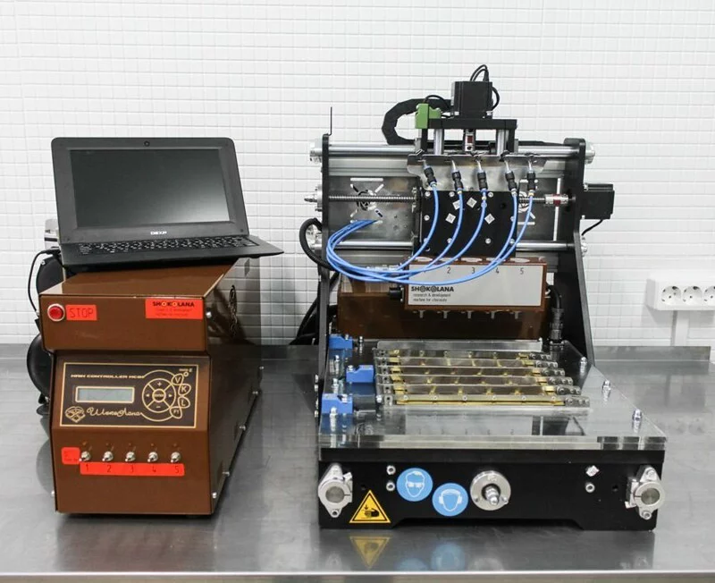
WALLi-X5 je specializiran stroj za izdelavo čokoladnih črk. Opremljen je s programsko opremo in lahko na čokoladne tablice nanaša širok nabor motivov iz trenutnega kataloga izdelkov podjetja Shocolana.
WALLI-X5 deluje s posebnim programskim modulom »Načrt risanja«. Upravljavec vidi dnevno proizvodno nalogo: katere čokoladne črke ali simbole je treba izdelati in v kakšnih količinah.
Naloga se pripravi na podlagi naročil strank in trenutnih zalog izdelanih čokoladnih črk. Upravljavec pripravi čokolado, po potrebi doda živilsko barvilo, napolni ogrevana dozirna peresa s čokolado in jih namesti v stroj.
Po izbiri želenega simbola na zaslonu na dotik stroj naloži program risanja v pomnilnik. Upravljavec pritisne zagon, stroj pa samodejno nanese izbrani simbol na čokoladno tablico.
WALLI-X5 ne deluje kot običajen tiskalnik in ne tiska slikovnih pik. Tanka igla se premika po programirani poti, ustvarja reliefno čokoladno črto debeline približno 1 mm in med premikanjem zapolnjuje obris s čokolado.
Čokolada se iz dozirnih peres dovaja s pritiskom stisnjenega zraka. Peresa se ogrevajo, da čokolada med delovanjem ostane tekoča.
Končna kakovost je odvisna od premera igle, natančnosti tlaka, razmika med iglo in površino čokolade, sobne temperature ter viskoznosti čokolade. Proizvodno strokovno znanje in pravilne nastavitve so zato ključni za stalne rezultate.
WALLI-X5 je več kot stroj. Je ključna tehnologija razširljivega poslovanja s personaliziranimi čokoladnimi sporočili, ki omogoča učinkovito proizvodnjo premijskega izdelka stalne kakovosti.
Tradicionalne metode so močno odvisne od silikonskih kalupov, ki sčasoma omejijo rast ponudbe. Neposredni tisk s čokolado to omejitev odpravlja in omogoča širitev ponudbe brez stalnih naložb v nove kalupe.
Stroj prevzame eno najbolj delovno intenzivnih opravil. Namesto ročnega nanašanja črk in okraskov je mogoče več časa nameniti prodaji, pridobivanju strank in razvoju poslovanja.
WALLI-X5 ustvarja reliefne čokoladne črke in motive neposredno na tablici. V primerjavi s ploskimi čokoladnimi transferji je rezultat videti bolj premijsko, privlačno in vredno za kupca.
Isti simbol je vedno izdelan z enakimi parametri. To zagotavlja doslednost, ki jo je z ročnim delom izjemno težko doseči.
Poleg črk in besed lahko stroj nanaša zahtevne obrisne motive, sezonske elemente, okrasne simbole in logotipe podjetij za poslovna naročila.
WALLI-X5 je dovolj kompakten za običajno slaščičarsko delovno mizo. Za zagon in delovanje posla lahko zadostuje razmeroma majhen proizvodni prostor.
Ti videoposnetki prikazujejo ključno tehnologijo izdelave čokoladnih sporočil. Videli boste nanašanje čokoladnih simbolov in izdelavo končnega izdelka s tehnologijo neposrednega tiska s čokolado.
Oglejte si, kako WALLI-X5 samodejno izdeluje čokoladne črke in simbole, ki se nato uporabljajo za sestavljanje personaliziranih čokoladnih sporočil.
Videoposnetek prikazuje nanašanje čokoladnih napisov in motivov neposredno na površino čokolade, kar ustvari reliefni učinek, privlačnejši od tradicionalnih ploskih čokoladnih transferjev.
WALLI-X5 ni le samostojen stroj. Je del proizvodnega procesa, v katerem obnašanje čokolade, temperatura, viskoznost, skladiščenje, ravnanje z izdelkom in delovni proces neposredno vplivajo na kakovost, produktivnost in delež neustreznih izdelkov.
Prenos opreme mora zato spremljati praktično strokovno znanje, proizvodna dokumentacija in svetovanje za doseganje stalne kakovosti.
WALLI-X5 deluje skupaj s pomožno opremo za pripravo čokolade, oblikovanje, hlajenje, polnjenje in pakiranje. Vsak kos opreme je posebej opisan spodaj.
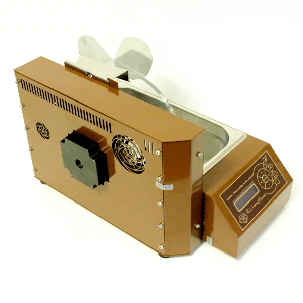
Uporablja se za temperiranje čokolade in doziranje v kalupe. Omogoča izdelavo čokoladnih črk, tablic in drugih elementov čokoladnih sporočil.
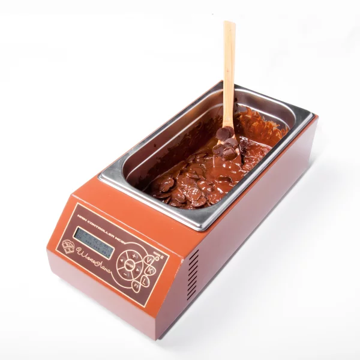
Namenjena je ohranjanju čokolade v delovnem stanju med proizvodnjo. Uporablja se za taljenje čokolade in stabilizacijo njene temperature.
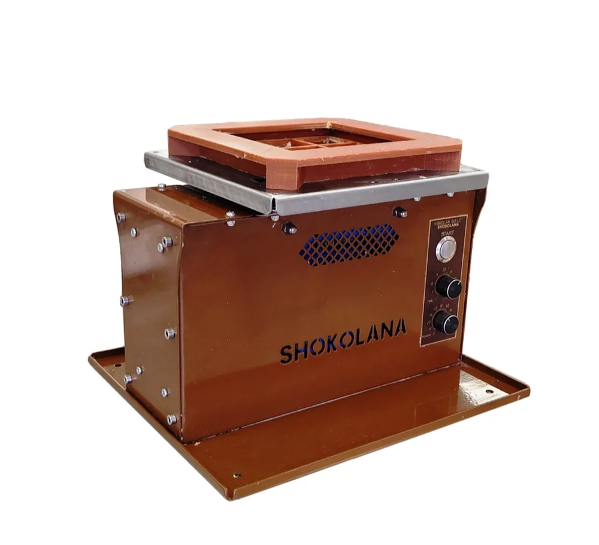
Uporablja se za odstranjevanje zračnih mehurčkov iz čokolade po vlivanju v kalupe. Omogoča kakovostnejšo površino končnih izdelkov.
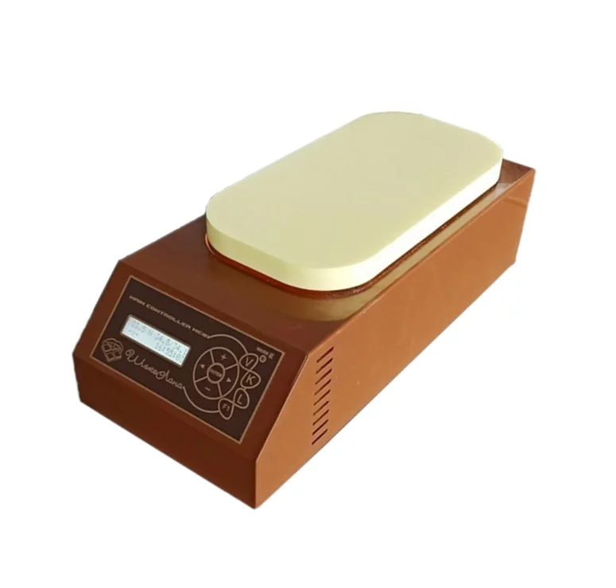
Uporablja se za izdelavo »svile« — stabilnih beta kristalov kakavovega masla tipa V (33,8 °C), potrebnih za profesionalno temperiranje čokolade.
Ti videoposnetki prikazujejo izdelavo osnovnih čokoladnih tablic za nanašanje črk in okrasnih tablic za sestavljanje kompletov sporočil.
Oglejte si, kako se s ShokoComby-4L in Vibrolan Bullet izdelujejo tablice bele čokolade z mandlji.
Videoposnetek prikazuje temperiranje čokolade v ShokoComby-4L z dodajanjem čokoladnih kaletov.
Kratki odgovori na pogosta vprašanja potencialnih kupcev.
Prodaja vključuje proizvodno opremo, kalupe, proizvodno dokumentacijo, opis poslovnega modela, marketinška gradiva, kontakte dobaviteljev in podporo pri prenosu.
Da, koncept in opremo je mogoče uporabljati v državah EU. Kupec mora preveriti lokalne zahteve glede proizvodnje živil, dovoljenj in certificiranja.
Usposabljanje lahko vključuje proizvodne tehnike, nadzor kakovosti, upravljanje opreme, pakiranje in operativne procese. Cena usposabljanja se dogovori posebej.
Idealen kupec je podjetnik, družinsko podjetje, podjetje za darila, projekt e-trgovine ali podjetje, ki deluje na trgu poslovnih daril.
Gradiva lahko vključujejo proizvodna navodila, tehnološka priporočila, kontrolne sezname kakovosti, priročnike za opremo, marketinške predloge ter priporočila za cene in prodajne kanale.
Pošljite povpraševanje in prejmite podrobne informacije o ponudbi.